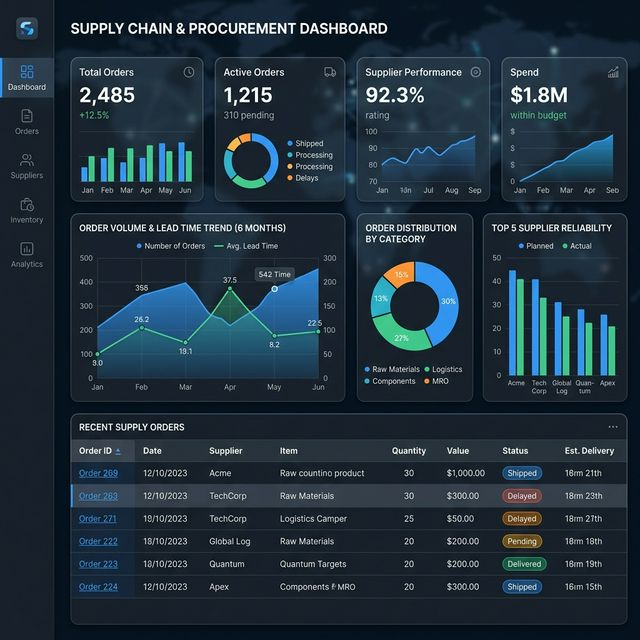

Dashboard de Compras — Follow UP

Visão Geral do Projeto
Um dashboard estratégico para monitoramento de ordens de compra e desempenho da equipe de suprimentos. Este projeto consolida dados operacionais em indicadores claros e visuais dinâmicos, cobrindo todo o ciclo de compras, desde o status da requisição até a entrega final no estoque ou usuário.
Principais Indicadores
- Follow-Up Automático: Acompanhamento de pedidos pendentes em tempo real (ex: verificação de 374 ordens aguardando entrega no momento de validação).
- Performance de Fornecedores: Avaliação de atrasos, entregas no prazo e conformidade de qualidade.
- Status Operacional (Pipeline): Visão de todas as etapas (aberto, aprovado, pedido gerado, em trânsito) permitindo atuar nos gargalos do Supply Chain antes que faltem produtos.
Construção e Ferramentas Utilizadas
O projeto foi inteiramente construído utilizando modelagem de dados dentro do Power BI e Power Query para garantir que as atualizações de saídas extraídas de planilhas locais e sistemas legados sejam limpas e apresentadas sem erro. Foram implementadas fórmulas DAX de métricas de tempo de chumbo (Lead Time) e inteligência de tempo.
Dashboard Interativo
Sinta-se à vontade para navegar nos filtros e ver os indicadores mudarem em tempo real, interagindo diretamente com o relatório abaixo: